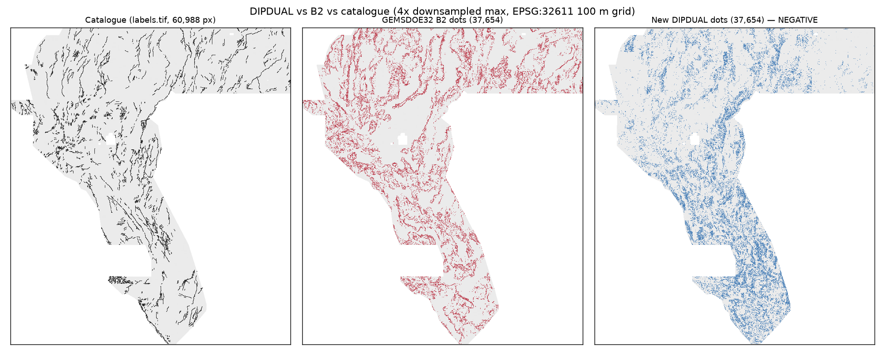
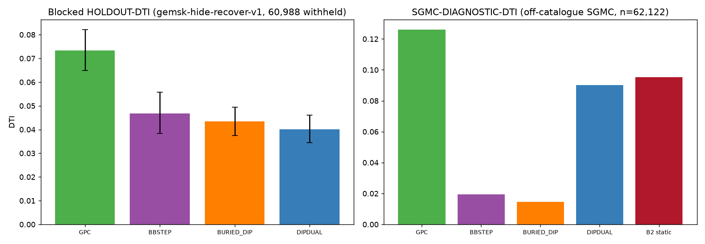

SESSION arena/147b0f11 · LANE H-K1-DIPDUAL · 2026-10-28
🔴 DO NOT SUBMIT — new unique TIF generated, holdout gates FAILED
Download for research: YES · Submit to DrivenData: NO. A brand-new GeoTIFF was generated this session (not copied from any prior submission), is discrete-unique and format-valid — but it scored below the repo controls on the preregistered holdout, so this project does not clear it, or any other file, for upload. Spending a weekly slot remains a separate selector decision.
⬇ Download new TIF (research only) ⬇ ZIP (single TIF) Writer receipt
karage1-dipdual-dualregime-dipshift-20261028T225112Z-zeros.tif
SHA-256 7b2a58eb1c3fb49cdd65f317c57d5552fe019c9be215aa2864533c2a50873cae ·
37,654 dots (24,475 exposed + 13,179 buried) · float32, EPSG:32611, whole-array finite [0,1] ·
Suggested portal name = filename · Note (76 chars):
DIPDUAL dual-regime dip-shifted research raster; gates failed; DO NOT SUBMIT
Score estimates — read the labels (no live projection exists)
Every number below is labelled. HOLDOUT-DTI and SGMC-DIAGNOSTIC-DTI are local instruments, not leaderboard estimates. Historical site scores are USER-REPORTED / UNVERIFIED (no organizer receipt in this workspace). The static B2 raster scores 0.004845 on the catalogue holdout purely because its apron used the full catalogue (censored) — proof that holdout numbers cannot be converted into live scores.
0.040056
HOLDOUT-DTI [0.034544, 0.046131]
gemsk-hide-recover-v1 · 60,988 withheld positives · fold-local emission
0.073394
HOLDOUT-DTI [0.064838, 0.082202]
same evaluator/folds/budget · DIPDUAL Δ −0.0333 [−0.0411, −0.0256] → gate failed
0.090244
SGMC-DIAGNOSTIC-DTI [0.077331, 0.102597]
off-catalogue SGMC n=62,122 · GPC 0.126149 · B2 static 0.095386
Executive table — which file, what score, is it unique?
| Site | File to download (research) | Score (labelled) | Unique vs other GEMSDOE? | Action |
|---|---|---|---|---|
| GEMSDOE32 | gemsdoe32-h33-h33-2-b2-20261004T220000Z-e5eb6e7e-zeros.tif | 0.2778 USER-REPORTED / UNVERIFIED | NO — D2.8 parent minus 2 px collar (measured exact) | DO NOT RESUBMIT |
| GEMSDOE36 | gemsdoe36-anderson-geothermal-pinn-38854-…-zeros.tif | 0.2750 USER-REPORTED / UNVERIFIED | NO — B2 plus exactly 1,200 dots | DO NOT RESUBMIT |
| GEMSDOE28 | gems28-h36-1-rung30-blind-r1-…-nan.tif | 0.2710 USER-REPORTED / UNVERIFIED | NO — r1 sibling mask identical to GEMSDOE31 | DO NOT RESUBMIT |
| GEMSDOE31 | gemsdoe31-h27-4-solo-d28-…-nan.tif | 0.2708 USER-REPORTED / UNVERIFIED | NO — identical mask to GEMSDOE28-r1 (= parent −1 px collar) | DO NOT RESUBMIT |
| GEMSDOE33 | GEMSDOE33-h33d-analog-tip-stepover-r30-….tif | 0.2632 USER-REPORTED / UNVERIFIED | NO — D2.8-family derivative | DO NOT RESUBMIT |
| GEMSDOE25 | gems25-dotted-h19-5-d2-8-…-nan.tif | 0.2600 USER-REPORTED / UNVERIFIED | NO — mask identical to GEMSDOE30; B2's parent | DO NOT RESUBMIT |
| GEMSDOE30 | gemsdoe30-d28-poisson300m-offcat-44090-….tif | 0.2600 USER-REPORTED / UNVERIFIED | NO — mask identical to GEMSDOE25 | DO NOT RESUBMIT |
| GEMSDOE24 | gems24-h25-1-dotted-h19-5-d1-5-…-nan.tif | 0.2477 USER-REPORTED / UNVERIFIED | NO — crowded 1.5 px-spacing variant of same mask | DO NOT RESUBMIT |
| GEMSDOE27 | gems27-topo-gap-closure-t-v2-on-d1-5-…-nan.tif | 0.2449 USER-REPORTED / UNVERIFIED | NO — D1.5 derivative | DO NOT RESUBMIT |
| karage1 DIPDUAL (NEW) | karage1-dipdual-dualregime-dipshift-20261028T225112Z-zeros.tif | HOLDOUT-DTI 0.040056 [0.034544, 0.046131] live score: unknown — no projection | YES vs discrete registry (worst fwd 23.75%; vs B2 11.96%); lattice literal 99.89%* | DO NOT SUBMIT (holdout gates failed) |
| karage1 HMAS (prior) | karage1-hmas-sinter-dualcover-sep29-20261027T220000Z-zeros.tif | SGMC-DIAGNOSTIC 0.112595 (our re-score) prior HOLDOUT claims not rerun | YES vs 318-raster fleet audit (max discrete 60.39%); lattice literal fails* | NOT CLEARED — selector shortlist, needs re-validation |
*Lattice: the 13GEMSDOE s5 calibration lattice lies within 3 px of
99.8713% of footprint cells, so any 37,654-dot raster has forward overlap
≥82.34% (B2 itself: 99.915% forward, 15.06% reverse). Role-classified as
calibration_probe in registry/registry_roles.json;
literal value published in the run card. Selector must acknowledge.
Why B2 reported the highest nine-site score
Measured ladder (pixel-exact): H19-5 thick mask 121,131 px (0.1922) → 2.8 px dotted subset 44,090 (0.2600) → minus ≤1 px catalogue collar 40,199 (0.2708) → minus ≤2 px collar 37,654 = B2 (0.2778) → plus 1,200 dots (0.2750). Under DTI (α=0.2, β=0.8, 300 m kernel; known pixels masked), dotting removes kernel redundancy and the collar deletes near-catalogue dots whose realised credit was below the marginal bar ≈α·DTI. That is emission hygiene, not superior geology — which is why changing the surface (incl. this session's DIPDUAL) keeps scoring below the dotted family until a surface demonstrably ranks off-catalogue traces better at equal hygiene.


Autonomous validation gates (no human inspector)
| Gate | Tool | Result |
|---|---|---|
| Leakage canary (15 features) | EXP1 AUC/fold | ✅ PASS — max direction-invariant AUC 0.609 ≤ 0.90 |
| Blocked holdout vs controls | gemsk-hide-recover-v1 | ❌ FAIL — below GPC and BB-STEP (paired CIs exclude 0) |
| SGMC off-catalogue diagnostic | SGMC n=62,122 | ❌ FAIL — 0.090244 vs GPC 0.126149 |
| Format / [0,1] range | shared submission_writer + 2 re-reads | ✅ PASS — finite [0,1] everywhere; EPSG:32611/shape/transform match; 0 on-catalogue |
| Discrete uniqueness (24 rasters) | spearman + 3 px fwd/rev/Jaccard | ✅ PASS — worst fwd 23.75%, worst |ρ| 0.058 (pre-placement) |
| Lattice literal | 13GEMSDOE s5 | ⚠️ 99.89% forward — mathematically unavoidable ≥82.34% at this N; published, selector acknowledgment required |
What to do next
- Next preregistered lane: exposed-only GPC refinement (+ LOO damage-zone prior, LiDAR polarity, no obliquity gate, no buried quota) — GPC beat B2 on SGMC (+0.0308 [+0.0082, +0.0519]) and is the repo's best label-free blocked surface.
- Re-validate HMAS saved bytes end-to-end before any selector use.
- Confirm weekly cap + outside-encoding on the live DrivenData page with organizer-authenticated data; see How to submit.
Full audit trail: knowledge/session-review-arena-147b0f11.md ·
docs/research/preregistration-dipdual-20261028.md ·
evidence/exp{1,2,3}_dipdual_*.json